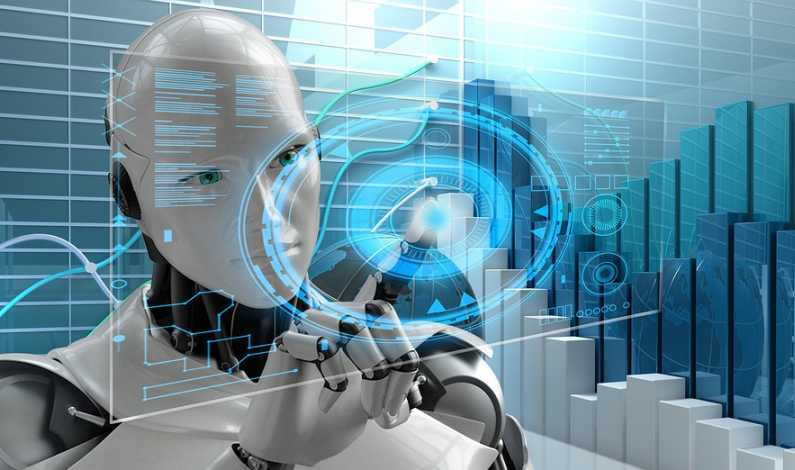

Robotica este o ramură a tehnologiei care se ocupă cu proiectarea, construcția și operarea roboților fizici. Este o știință multidisciplinară, la granița dintre inginerie, știință și tehnologie. De-a lungul timpului și-a extins și domeniul de activitate în același ritm cu evoluția tehnologiei. Dacă, în anii 2000, aproape toți roboții erau folosiți în fabrici, azi avem boți care cercetează planeta în condiții extreme, roboți care asistă forțele de ordine sau chirurgicali, care salvează vieți.
Un robot este un operator mecanic sau virtual, artificial. Robotul este un sistem compus din mai multe elemente: mecanică, senzori și actuatori precum și un mecanism de direcționare. Mecanica stabilește înfățișarea robotului și mișcările posibile pe timp de funcționare. Senzorii și actuatorii sunt întrebuințați la interacțiunea cu mediul sistemului. Mecanismul de direcționare are grijă ca robotul să-și îndeplinească obiectivul cu succes, evaluând de exemplu informațiile senzorilor. Acest mecanism reglează motoarele și planifică mișcările care trebuiesc efectuate. Roboții cu formă umană sunt numiți androizi.
Spre deosebire de „Frankenstein”, cuvântul „robot” a reușit să scape de originile sale de științifico-fantastic, pe măsură ce a fost adoptat în limba română. La Praga, în 1920, au apărut primii „roboți” din istorie, în paginile piesei de teatru „R.U.R”, scrisă în acel an de genialul scriitor cehoslovac, Karel Čapek. Inițialele sunt explicate în subtitlul ,,Robotii Universali ai lui Rossum”, acesta fiind numele companiei, care se ocupa cu o afacere dedicată creării oamenilor artificiali.

Toate tipurile de roboți sunt construiți folosind trei tehnologii mari:
Senzorii permit deplasarea și percepția detaliată a mediului înconjurător pentru a evita obstacolele (element critic în construcția mașinilor autonome, de exemplu).
Actuatorii (motoare electrice folosite în sistemele automate pentru executarea comenzilor) stabilesc forța și puterea robotului și cât de natural și discret se mișcă.
Inteligența artificială stabilește cât de inteligenți sunt.
Pret/inchiriere:166.000 dolari
pret:150 de dolari
Pret:99 de dolari
Pret:Între 15.000 şi 17.000 de dolari.
Pret:223.000 de dolari.